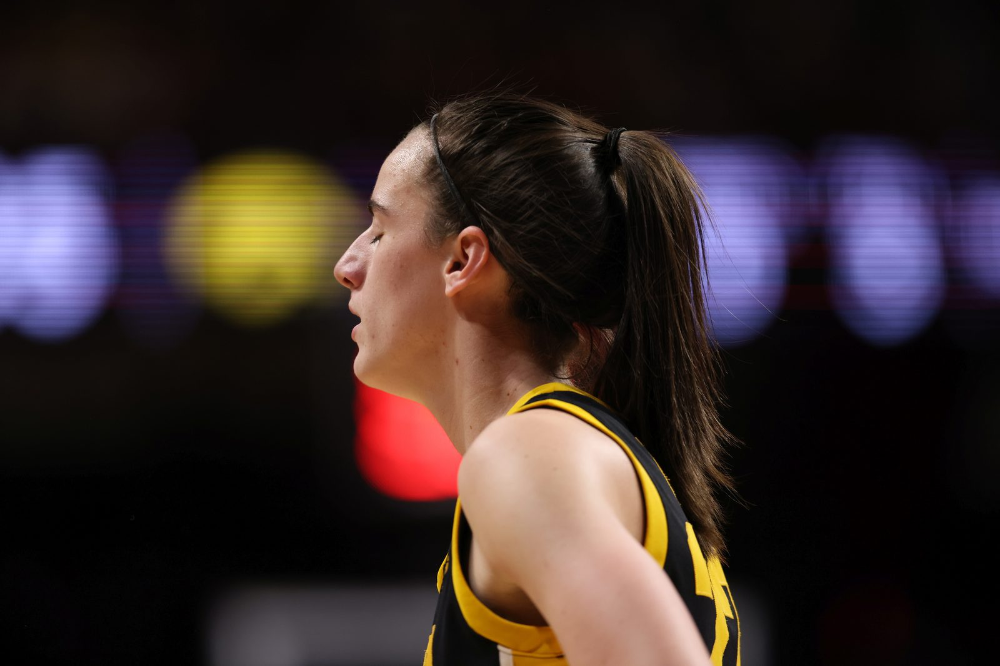

By the time she left Iowa, Caitlin Clark had scored more points than anyone in the history of major college basketball — men's or women's. The record she broke had stood since 1970.
Every spring, the NCAA tournament crowns new stars. Every summer, the WNBA tests them. The two datasets meet at the draft — and don't always agree.

By the time she left Iowa, Caitlin Clark had scored more points than anyone in the history of major college basketball — men's or women's. The record she broke had stood since 1970.
But college greatness is a promise, not a guarantee. The history of the draft is full of tournament heroes who faded in the professional game, and of overlooked role players who became champions. Clark delivered on the promise immediately; many before her did not.
Our dataset records each drafted player's college and the NCAA tournament runs of those schools (Sweet 16 and beyond), alongside complete WNBA careers: games, stats, transactions, and how long each player lasted in the league. We will link them to ask: do players from deep tournament runs have longer, better professional careers? Are college champions overdrafted on fame? And which colleges quietly produce the most reliable professionals?
Individual college statistics are not part of our core dataset, so this chapter works at the level of schools and tournament results, supplemented by NCAA records where needed. Chart data is preliminary and will be verified.